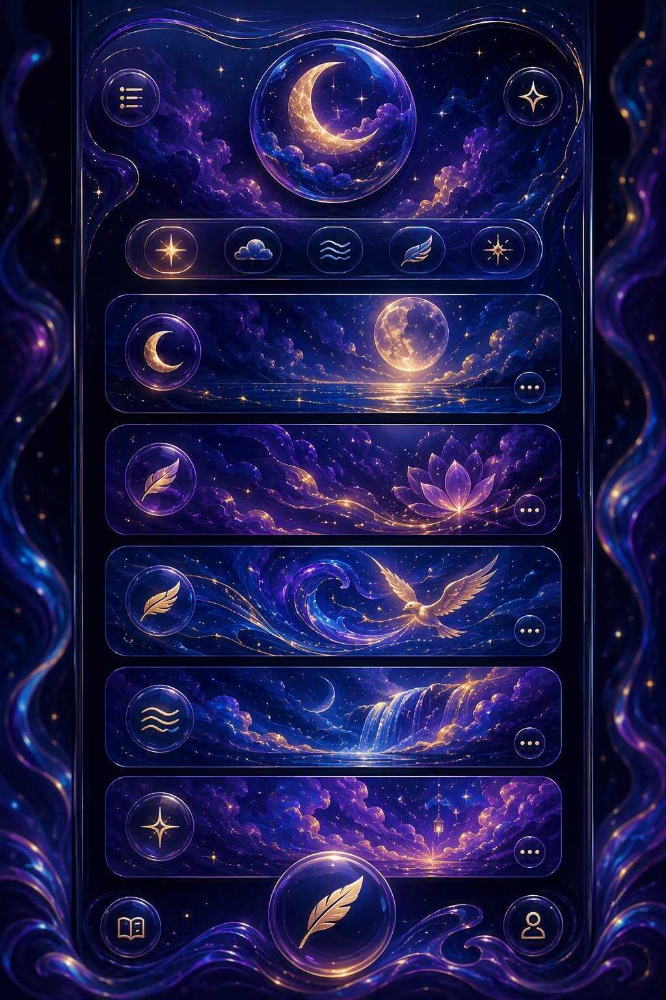
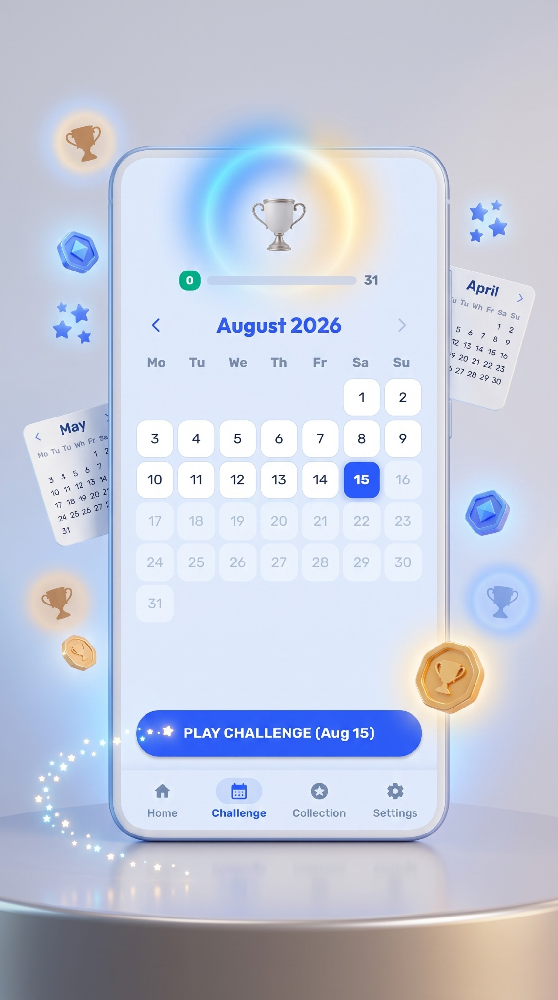
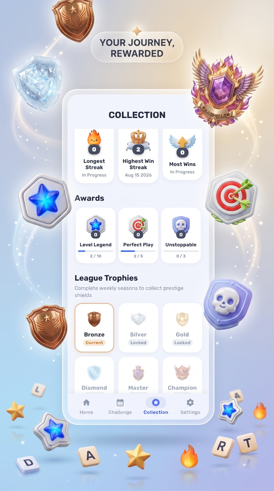
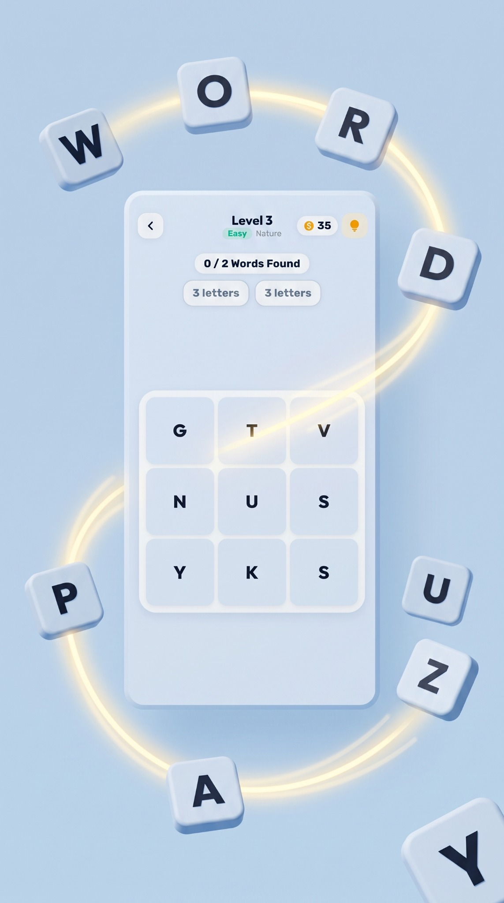

🧩
Handcrafted levels
Progress through carefully designed word-search stages, from introductory grids to more challenging puzzles.
Tricky Words is a refreshing word search puzzle designed to test your vocabulary, pattern recognition and deductive skills. Connect letters across handcrafted grids, uncover hidden words and enjoy a relaxing puzzle experience anytime, anywhere.
Simple to learn, satisfying to solve, with thoughtful features that make every puzzle meaningful.
Progress through carefully designed word-search stages, from introductory grids to more challenging puzzles.
Take on calendar challenges, build your streak and keep coming back for a fresh puzzle.
Explore the meanings behind words and popular idioms and phrases you discover during play.
When a puzzle gets tricky, spend hint coins to reveal the next letter coordinate.
Build your progress, maintain streaks and work toward achievements and rewards.
Play campaign levels, daily challenges and dictionary content without Wi-Fi or cellular data.
Explore the gameplay, challenges and progression that make Tricky Words a relaxing word-search experience.




Download Tricky Words on Google Play and start uncovering hidden words today.
Google PlayTricky Words is a word search puzzle game where you connect letters to uncover hidden words across handcrafted grids.
Yes. The campaign, daily challenges and dictionary content are designed to work offline without Wi-Fi or cellular data.
When you are stuck, hint coins can be used to highlight the next letter coordinate and help you continue solving.
Tricky Words is designed for casual players, word-search fans, crossword enthusiasts, vocabulary lovers and anyone who enjoys a thoughtful mental challenge.